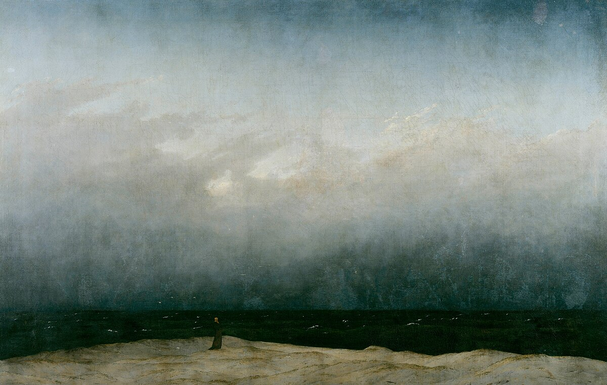

be cringe
2026-01-02

I have this innate fear of being seen when it comes to the things I create. Be it the next instagram post with pictures of myself or the next note here on my website. Is it cringe to do that? It feels like it is.
I publish my thoughts for everyone to read here on my website. I try to be unfiltered but I am fearful of coming across arrogant, or as a "know-it-all", two things that are definitely cringe.
When I like the pictures I've captured or words I've written down, I feel ready to show them to my followers. But before I hit the post button, a second thought arises. That fear I mentioned, of how others will perceive it, pops up.
But is it really cringe to publish something that you like yourself? Something that makes you you?
We often want to create relatable things because we strive to resonate with others. But it's often the things that are unique to ourselves, the parts that feel a little too raw or a little too specific, that make us interesting and vulnerable. Those are the parts that actually stick.
Perhaps cringe is just the biological alarm system that goes off when we're being dangerously honest. If so, I want to set that alarm off more often. So, here is to being seen, being misunderstood, and being "cringe." It's a small price to pay for being real.